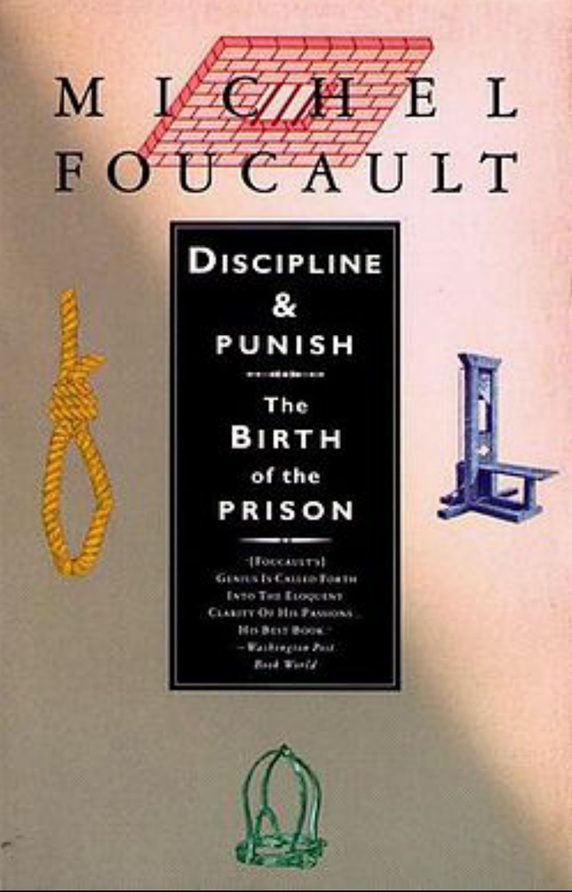
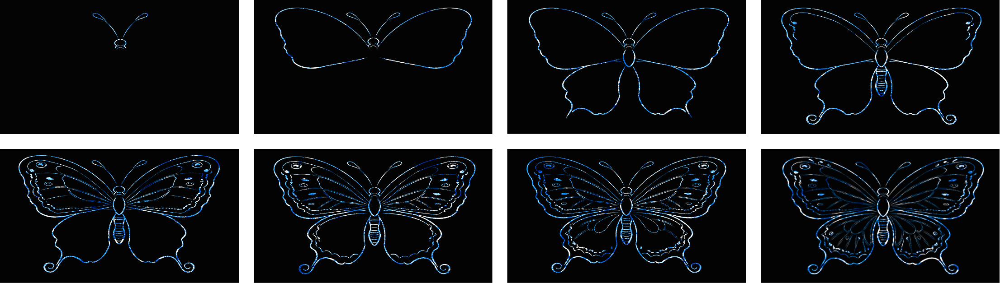

WHO OWNS
THE BLUE?
The Mask of Democracy
— How Generative Art Steals the Soul of Batik
When you type in the four characters "batik style," the algorithm spits out a beautiful
pattern within seconds. The system congratulates you on becoming an "artist"—but you've
just participated in a cultural murder.
Enter "batik style" into Midjourney, and within
moments, a vividly saturated image appears on your screen. "The age of everyone being an
artist has arrived." How appealing. Yet behind this phrase lies an ugly truth: generative
art does not liberate creativity; it systematically erodes the cultural sovereignty of batik.
Disguised as democratization, this is the most concealed form of cultural colonization—our
era's most insidious violence.
"cultural murder"
cultural murder


.jpg)

I. Batik Is Not a Style,
But a Boundary of Knowledge
In traditional batik communities of Guizhou, batik has never been a pattern game accessible to everyone. It is a knowledge system governed by strict apprenticeship, ethnic boundaries, and ritual taboos. Certain motifs belong only to specific families; certain totems appear exclusively in funeral ceremonies; the gradations of blue record a village's migration history. This is knowledge authority embedded within a particular social structure.
Generative art uproots these patterns from their cultural soil and mass-produces them under the name of "style." It makes laypeople believe they possess batik, while in reality batik has lost itself. What you're producing is not batik—it's an image that "looks like batik." Algorithms won't tell you the difference.
II. From Discipline to Extraction: your
"Freedom" Is Someone Else's Bill

Foucault reminds us in Discipline and Punish: knowledge is never neutral. Whoever defines "what counts as knowledge" decides "who can be heard." （Foucault, 1977）In generative art, platforms and algorithms have become the new "knowledge authorities." Through dataset selection and model optimization, they silently define what "batik style" means. Meanwhile, the Guizhou women who truly master batik are excluded from this definition. All packaged as "democratization." Foucault would point out: this is an upgraded form of discipline—not enforced through violent prohibition, but through technological seduction that leads you to willingly surrender control over knowledge. You are not creating; you are replicating a "style" already stripped of meaning.
Zuboff introduces another concept in The Age of Surveillance Capitalism: data extraction. Platforms harvest our behaviors, preferences, and cultural expressions, transforming them into tradable products. (Zuboff, 2019) When you generate "batik style" images, you are contributing free annotations to the platform's models. The true custodians of batik receive no credit, no compensation. Old colonialism plundered land and resources; new colonialism exploits meaning and knowledge.
III. Traffic Buries Craft: When Algorithms
Become New Colonial Masters
In 2023, when reporters from the People's Daily interviewed Yang Xiuzhen, a national-level batik heritage inheritor, she said: "The patterns they (machines) produce are ones we've never dared to create ourselves—those would be considered taboo." Yet the traditional patterns she has spent her life preserving are now being mass-produced by AI and sold at low prices.
Handcrafted batik posts on Xiaohongshu receive fewer than a thousand views, while AI-generated "batik-style" content accounts for 62% of such content, with individual posts receiving thousands of likes. The average price of handmade batik ranges from 100 to 800 yuan, whereas AI imitations sell for only 20 to 200 yuan. AI-generated "ethnic-style" products have surged by 140%. Meanwhile, China's AI image generation tool market reached 47.17 billion yuan, nearly five times larger than the previous year.
A survey by MIT Technology Review revealed that in LAION-5B, the world's largest AI training dataset, over 2.4 million images belong to intangible cultural heritage, yet less than 0.5% credit their cultural origins. Data labeling is outsourced to workers in Kenya, who earn less than two dollars per hour.
IV.the blue of breathing,not handed over to keywords
This is my work
As a column piece for this issue of the "Spirit of the Digital Age" digital newsletter, I created *Indigo Breath*. This is an interactive dance video artwork built using Touch Designer and motion capture technology, entirely produced, shot, edited, and choreographed by me. The choreography is narrative-driven—dancers move from expansion to contraction, from fluidity to obstruction, metaphorically tracing the life cycle of batik: drawing, waxing, dyeing, and unwaxing. My article critiques how generative art reduces batik into a disposable "style tag" , erasing its essence as a knowledge-making process. The narrative structure of the choreography aims to make viewers witness this process, rather than merely consume an end result. The real-time projection via Touch Designer visualizes particle effects of batik patterns, dynamic evolution of authentic ice-crack textures, and the flow paths of molten wax—these are not imitations of a "batik style," but visual reconstructions of the actual making process. The blue hues in the imagery originate from real-time mapping of the dancers' bodies, not algorithmic data extraction of "batik style."

Why choose interactive dance? Because dance itself is an unrepeatable bodily process—each breath, each flick of the wrist exists only in that singular moment. What audiences witness is not a result that can be captured or endlessly replicated, but an event unfolding in real time. I want viewers to reflect: when generative art turns all cultural artifacts into callable "styles," what have we lost? And this is precisely where TouchDesigner's value lies: only real-time interaction enables "dance composing content, interaction following the dance"—the dancer’s motion capture data directly drives particles, ice-crack patterns, and motifs to bloom from the body. This live generation completely rejects the black-box logic of AI, which follows the pattern of "input keywords—output fixed images." Generative art relies on statistical patterns within datasets, whereas the generation in *Indigo Breath* is based solely on the dancer’s present physical state. With TD, I’ve proven one thing: algorithms may imitate outcomes, but they can never replicate the process—and that is exactly why batik remains alive.
V.Democracy is not free of charge.
The slogan of "creative democratization" masks a crucial truth: not all knowledge should be accessible to "everyone." True democracy does not mean eliminating thresholds, but ensuring those excluded have the right to define them. Genuine respect is not about letting everyone "do" batik, but recognizing that some things you don't understand—and shouldn't pretend to understand.
Surveillance capitalism seeks to turn everything into extractable, quantifiable, and resalable data. But the indigo of batik cannot be fully captured by RGB values. It is a living knowledge, not merely a stylistic keyword.
The batik artisans of Yogyakarta, the dyers of Guizhou, the weavers of Sulawesi — they are not competing in a market. They are watching their vocabulary become raw material for systems that will never speak their language. The question is not whether AI can learn to make batik. The question is whether we believe that learning requires permission.
REFERENCES
Foucault, M. (1977). Discipline and punish: The birth of the prison. Vintage Books.
Guo, R. G., & Ji, X. L. (2026). Intellectual property protection pathways for creative transformations of intangible cultural heritage. Beijing Social Sciences, (3). https://doi.org/10.14092/j.cnki.cn11-3956/c.2026.03.023
Lu, L. Y., & Song, B. W. (2024). The composition, impact and response of “digital colonialism”. Foreign Languages and Literature, 40(2), 146–156.
Ouyang, E. Q. (2023). The negation of algorithmic power. Journal of Southwest University of Political Science and Law, 25(4), 137–146. https://doi.org/10.3969/j.issn.1008-4355.2023.04.11Haraway, D. (1988). 'Situated Knowledges: The Science Question in Feminism.' Feminist Studies, 14(3), 575–599.
Zhao, S. S., & Cao, P. (2025). [Study on digital texture image and intelligent reading algorithm]. 计算机科学与应用, 15(3), 53. https://doi.org/10.12677/csa.2025.153053
Zubzoff, S. (2019). The age of surveillance capitalism: The fight for a human future at the new frontier of power. PublicAffairs.